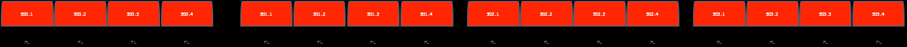
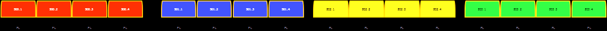
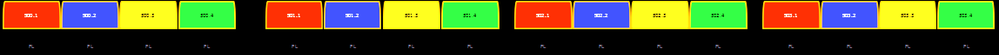
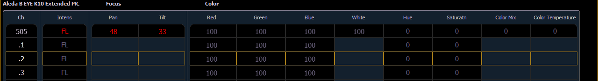

Fixtures that have multiple same-type parameters can have a multicell profile assigned to them, as designated by MC in the fixture editor. See Patching Multicell Fixtures for more information.
Multicell fixtures have a master channel with a whole number for a channel number and the appropriate number of additional cells, which will have point numbers for their channel numbers.
To control the whole fixture, select the master channel.
To control individual cells, use [.] to put cell only on the command line.
To control just the master, use [Shift] & [.] to put minus cells on the command line. You can also use the syntax [1] [.] [0] or [1] {Cell} [0] to just control the master.
To select the master and any or all of the cells, you can use the following syntax examples, [n] [.] [0] [Thru] [n], [n] [.] [0] [+] [n], or [n] [.] [0] [-] [n]. The {Cell} softkey can be used instead of the [.] hardkey.
For Example:
Channel 1 is a multicell fixture with four cells.
Sets the intensity of the master channel to full. Note that the intensity parameter for cells defaults to full.
Sets only cell one at 50% of the intensity of the master. Cells are a percentage of the master level. [.] puts cell on the command line.
This can be especially useful when applying effects or palettes.
For Example:
Channel 1 through 4 are multicell fixtures with four cells.
Sets channels 1 through 4 to color palette 1. All four cells of each fixture are set to color palette 1, which is red.

Channel 1 with its four cells will be set to color palette 1, channel 2 will be set to color palette 2, and so on.

For each of the channels, cell 1 will be in color palette 1, cell 2 in color palette 2, cell 3 in color palette 3, and cell 4 in color palette 4.

You can also have a cell selected and still apply data to the master channel as long as the cell does not also have that parameter. When you have selected a cell, if you apply data that does not apply to the master, Eos understands to apply it to the cells instead. In the example above, IF the master had color parameters, this action would apply color data ONLY to the master.
Cells will not send data to other cells though. Table view is helpful for seeing which cells control what parameters.

For Example:
Cell 2 of a fixture is currently selected. You can adjust the encoders for pan and tilt even if the master actually controls those parameters. The cell will send that information to the master. This allows for greater ease of control.
The following are additional multicell syntax examples:
Offset can be very useful when applied to multicell fixtures, and can be useful for creating subgroups. See Offset and Subgroups for more information.